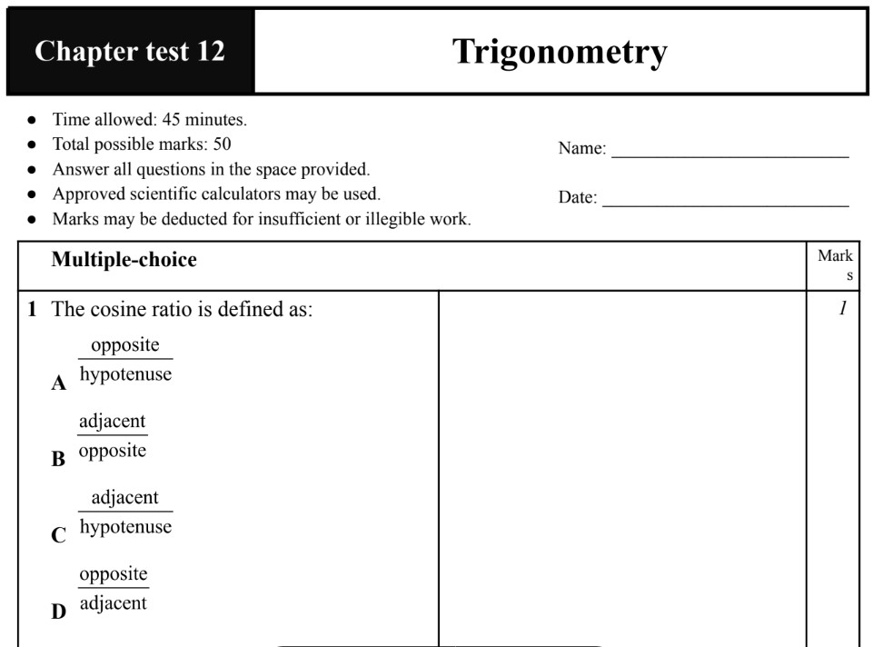
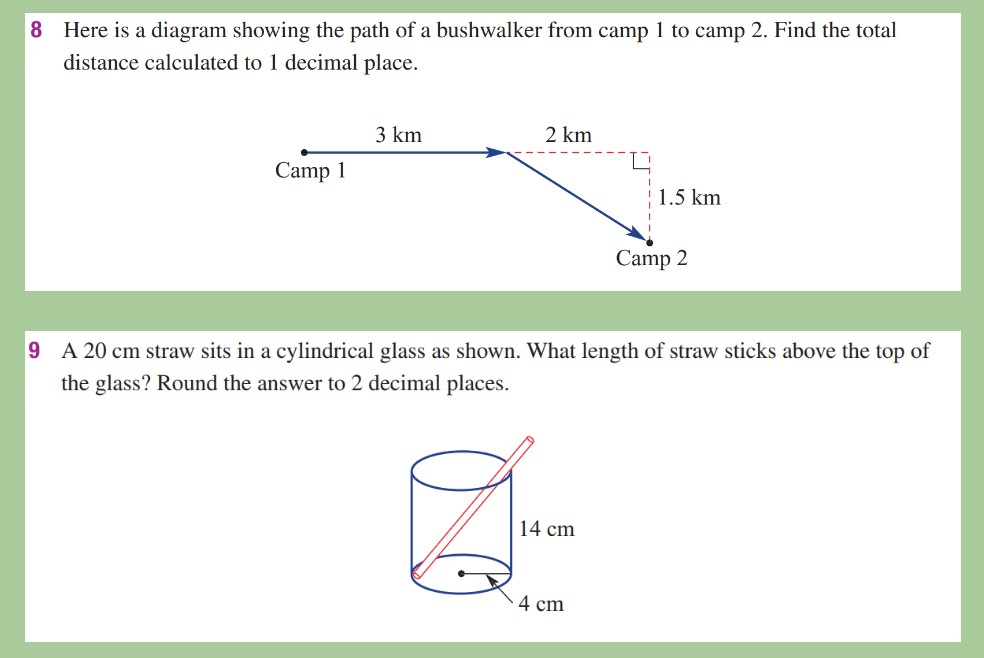

Teaching Philosophy
Curriculum
Develop and implement units and lessons based on standards, available materials, student interest, and cross-curricular subjects.
- Create lessons that are founded in the Scope and Sequences Standards, and challenge students to apply basic concepts to real-world contexts.
- Promote both literacy, numeracy, critical-thinking, problem solving, student-centerd work, collaborative work and applications to everyday life for all students.
Assessment
Apply a variation of assessment methods to measure the knowledge gained by students and to improve student learning.
- Summative Assessment – assessment that show demonstration and mastery of a concept that evaluate student learning at the end of an instructional unit, also including the comparision of their pre and post tests.
-
Formative Assessment – to monitor student learning to provide
ongoing feedback that can be used by instructors to improve their teaching
and by students to improve their learning. More specifically, formative assessments:
help students identify their strengths and weaknesses and target areas that need work to
assess the need for adjustment in instruction to increase student
learning and understanding.
Example: When results of an exit slip showed students did not grasp the desired concept, instructional plans were adjusted enable teachers to quickly assess students' understanding of the concept or also utilize a different approach allowed students to learn more effectively. -
Informal Assessment – an intuitive assessment method
where teachers do not evaluate student performances on some grade or metrics, but
rather focus on observing students' performances and progress at different stages
of their learning time frame. It is conducted using various forms of evaluation and ongoing
monitoring to evaluate student comprehension and therefore modifying lesson plans as needed.
Example: When a quick demonstration on a whiteboard revealed whether or not students have understood the lesson’s objective, therefore instead of moving on, I would pause and reinforce the concept through another method. -
Student Formative Self-Assessment – to
monitor student learning to provide ongoing feedback
that can be used by instructors to improve their teaching
and by students to improve their learning. More specifically,
formative assessments: help students identify their strengths
and weaknesses and target their own learning goals.
Example: Allowed students to think and write about their understanding of a math lesson, explain their strategies and reasoning to solve problems using their own words and to communication for a solution.

Students recieved a topic test at the end of every topic as a knowledge reinforce and refinement, which locks in the knowledge from previous topic and get them ready for the upcoming one.
Differentiation and Diversity
Having practicum in two different schools, I have gained experience in diverse classroom settings. When creating lessons, I take students’ cultures, backgrounds, levels of knowledge/skills, and learning styles into consideration and provide multiple means of access to materials.
- Coordinate classroom learning to achieve a balance between whole group instruction, small group collaboration and individual work.
- Use diverse methods of instruction to allow for auditory, kinesthetic and visual learners to be successful.
-
Utilizing technology resources to enhance lessons.
Example: Incorporated Presentation activities that allow students to practice and show their understanding of a math content by sketching, writing or audio/video recording their math thinking using their own words.
Example: In a collaborative project, students wrote, typed and shared a Google document across the entire cohort. This allowed students to use technology while also working on numeracy skill, learning maths content whilst practicing their literacy standards.

Having both physical and visual resources targetted students with different abilitys and learning styles, support their individual learning needs in a diverse classroom.
Life-long Learning
As a Math teacher but also a teacher in general, I aim to encourage life-long learning in all my students. Exposing students to opportunities in every day lesson is one way to foster a love of learning and especially, to Mathematics.
- Take advantage of the resources and the surrounding environment to provide meaningful lessons that relate to student's prior knowleges.
-
Relating the lesson to students’ interest.
Example: When explaining the concept of Bias in the first lesson of Data Analysis. I did refer to the student's personal interest of their favorite K-pop groups and therefore was able to delivered the knowledge more effectively. Interacting with the student and allowing students to interact and communicate with each other encourge and foster their love to learning. -
Use personal experiences to teach students about the world
beyond their community.
Example: Having a prior knowledge and experience of education in another country allowed me to be able to shared stories of my life experiences (Viet) to broaden my students' view of the world beyond what they know.
Inspiration: Eddie Woo is the ultimate inspiration of the journey to become a math teacher, using his methods, teaching strategies and application assisted myself a lot in lesson preparation.
Collaboration and Communication
- Student working collaboratively encourages peer-learning that involves students working in pairs or small groups to discuss concepts or find solutions to problems. The benefits of collaborative learning include: development of higher-level thinking, oral communication, self-management, and leadership skills, promotion of student-faculty interaction, increase in student retention, self-esteem, and responsibility, exposure to and an increase in understanding of diverse perspectives, preparation for real life social and employment situations.
- Maintain safe and consistent classroom environment. An open relationship promotes opportunities for support in the various areas of teaching including curriculum, different personality, consistent communication and other other aspects that focus on student learning and student-centerd work.

Example: I created a classroom environment to provide consistent communication about the lesson content, new ideas, important informations and student discussions.
Classroom Management
- I hold each student accountable for his/her learning to encourage him or her to succeed in the classroom.
- The classroom environment is one that fosters respect for all, responsibility for actions, and readiness to learn.
- Descriptive classroom procedures direct students to the type of behavior they are expected to demonstrate. Continual practice and opportunities for leadership allow students to develop habits that promote learning.
- Students develop independent work habits as well as collaboration with peers, through varied classroom opportunities.
- I have a high expectation for all students, requiring them to put forth the effort and work that they are all capable of. When a student doesn’t reach this expectation on a particular assignment, I give them the chance to reflect on what they did and provide the opportunity to improve on their understanding.